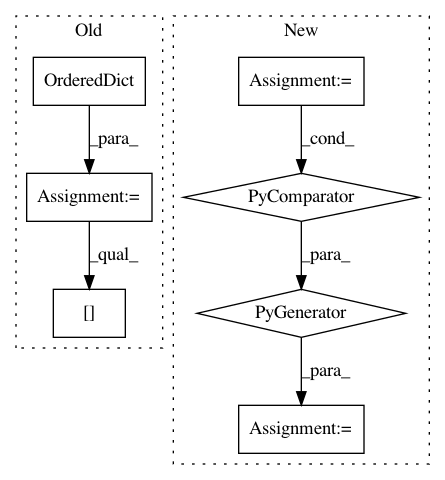

558f030de16f0e3ea4ce860aac0d085faad99441,ilastik/applets/batchProcessing/batchProcessingGui.py,BatchProcessingGui,run_export,#BatchProcessingGui#,153
Before Change
role_names = self.parentApplet.dataSelectionApplet.topLevelOperator.DatasetRoles.value
// Prepare file lists in an OrderedDict
role_path_dict = OrderedDict()
role_path_dict[0] = BatchProcessingGui.get_all_item_strings(self.list_widgets[0])
num_datasets = len(role_path_dict[0])
for role_index, list_widget in enumerate(self.list_widgets[1:], start=1):
role_path_dict[role_index] = BatchProcessingGui.get_all_item_strings(self.list_widgets[role_index])
assert len(role_path_dict[role_index]) <= num_datasets, \
"Too many files given for role: "{}"".format( role_names[role_index] )
if len(role_path_dict[role_index]) < num_datasets:
After Change
role_names = self.parentApplet.dataSelectionApplet.topLevelOperator.DatasetRoles.value
// Prepare file lists in an OrderedDict
role_path_dict = OrderedDict(
(role_name, self._data_role_widgets[role_name].get_all_item_strings())
for role_name
in role_names
)
dominant_role_name = role_names[0]
num_datasets = len(role_path_dict[dominant_role_name])
for role_name in role_names[1:]:
In pattern: SUPERPATTERN
Frequency: 3
Non-data size: 7
Instances
Project Name: ilastik/ilastik
Commit Name: 558f030de16f0e3ea4ce860aac0d085faad99441
Time: 2019-08-13
Author: k-dominik@users.noreply.github.com
File Name: ilastik/applets/batchProcessing/batchProcessingGui.py
Class Name: BatchProcessingGui
Method Name: run_export
Project Name: matplotlib/matplotlib
Commit Name: cbc060c8fe914bb3c75f42f3af4fc40b0eadba52
Time: 2018-02-25
Author: anntzer.lee@gmail.com
File Name: lib/matplotlib/artist.py
Class Name:
Method Name: setp
Project Name: mozilla/bugbug
Commit Name: f16992b25bb153df3ab87c5111db2a101cf68c73
Time: 2020-04-09
Author: mcastelluccio@mozilla.com
File Name: bugbug/models/testselect.py
Class Name: TestSelectModel
Method Name: train_test_split